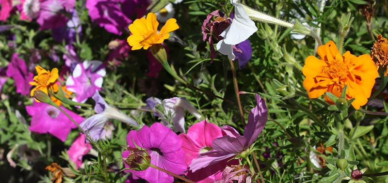

Kia ora! I'm Janie...
I live in Lower Hutt with my two tamariki aged 6 and 4, my partner, dog and chickens. I am a secondary school teacher and love teaching digital technology. So much, that I want to do programming and web development ALL day. So here I am. I like vintage stuff, like cute teacups. I also try my hand at photography - have a look at my Dogs of Petone Beach facebook page (if you like dogs too). I am enjoying this Enspiral Dev Academy course, apart from the brain explosions every other day, it's pretty fun.